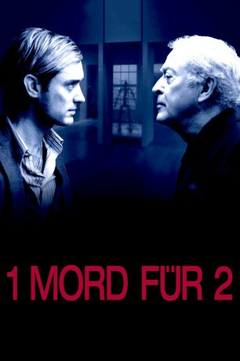

#3202 1 Mord für 2
Alternativ: Sleuth
 
 IMDB-Wertung: 6.5 / 10
IMDB-Wertung: 6.5 / 10  Metascore: 49
Metascore: 49 
Andrew Wyke ist durch das Verfassen von Krimis zu Reichtum gekommen. Dennoch hat ihn seine Frau wegen dem arbeitslosen Schauspieler Milo Tindle verlassen. Wyke lädt den Rivalen zu sich in sein entlegenes Anwesen ein und heuchelt Verständnis für die Situation, weist aber auch darauf hin, dass seine Frau Luxus gewöhnt ist. Um ihr ein schönes Leben bieten zu können, soll Milo die Juwelen Wykes stehlen und zu Geld machen. Milo geht auf das Angebot ein, ahnt allerdings nicht, dass Wyke Perfides im Schilde führt.
Jahr: 2007
Dauer: 88 Minuten
FSK: 12
Land: USA Studio: Sony Pictures ClassicsTonspuren: DTS - ,
Untertitel:
Auflösung: 1080p (1920x816) Größe: 8140 MB
Genre: Thriller, Drama, Mystery
Regisseur:  Kenneth Branagh
Kenneth Branagh
Drehbuch: Anthony Shaffer, Harold Pinter
Soundtrack: Patrick Doyle
Darsteller:
 Michael Caine als Andrew
Michael Caine als Andrew Jude Law als Milo
Jude Law als Milo- Harold Pinter als Man on T.V.
- Carmel O'Sullivan als Maggie , uncredited
Datei: X:\2007(A-F)\1 Mord für 2 (2007, FSK12, 1920x816).mkv seit 14.02.2016
Festplatte: HD 2007(A-Z)-2008(A-F)
 Es gibt insgesamt 65 Filme in der Gruppe '2007(A-F)'
Es gibt insgesamt 65 Filme in der Gruppe '2007(A-F)'